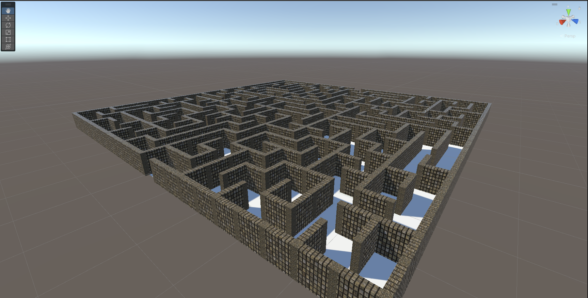
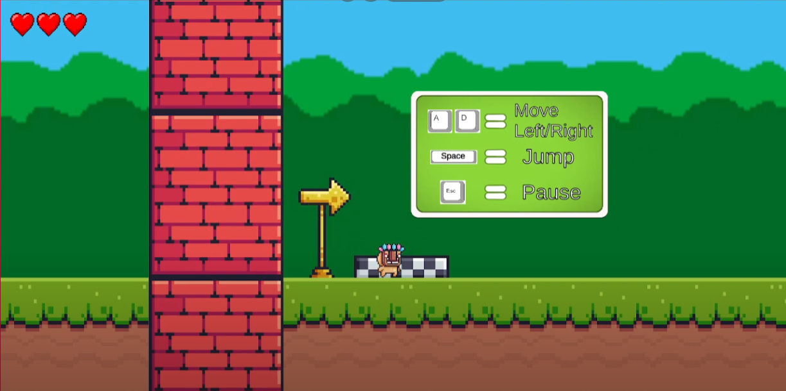

Projects
Here you can find all the projects that I've personally done or been part of.
Reverse-Bullethell [CURRENT]
Reverse-bullethell type game inspired by Vampire Survivors
3DEscapeAdventure
Player founds themselves stuck in a strange ruin and must complete certain puzzles to get the objects to escape.

2DPlatformerProto
Game programming - course project that is made in Unity. Simple platformer prototype using premade assets. Player must avoid obstacles and get to the finish line.
